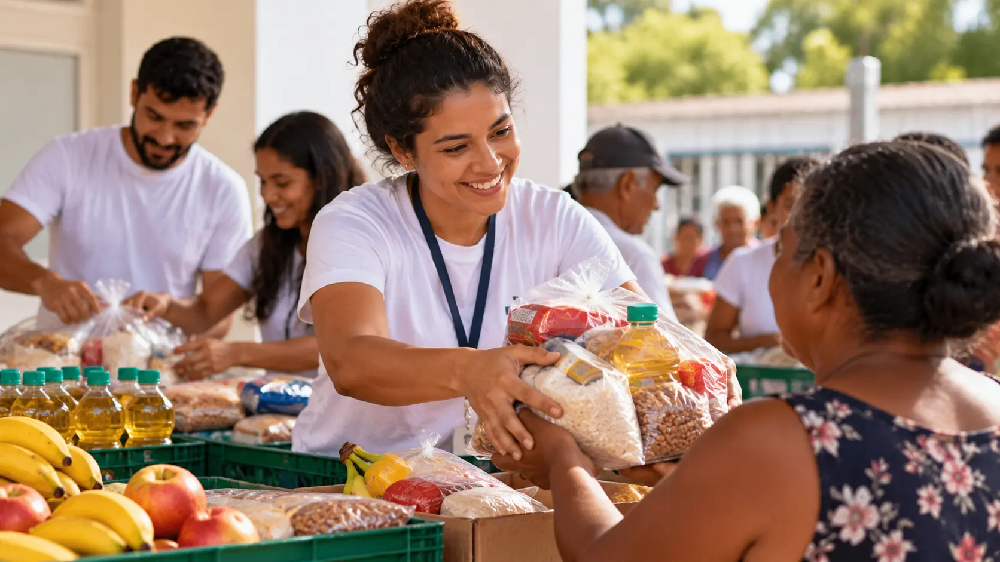

Educação para Todos
EducaçãoIniciativa que oferece apoio educacional, atividades de reforço escolar e incentivo à leitura para crianças e adolescentes da comunidade.
A ONG Transformar desenvolve iniciativas voltadas à educação, alimentação e inclusão social, buscando melhorar a qualidade de vida das pessoas atendidas pela organização.
Iniciativa que oferece apoio educacional, atividades de reforço escolar e incentivo à leitura para crianças e adolescentes da comunidade.

Projeto destinado à arrecadação e distribuição de alimentos para famílias em situação de vulnerabilidade social.
Você pode contribuir com nossos projetos atuando como voluntário. Para participar, realize seu cadastro.
Quero ser voluntárioAs doações ajudam a manter nossos projetos e ampliar o número de pessoas beneficiadas pelas ações da ONG.
Quero contribuir